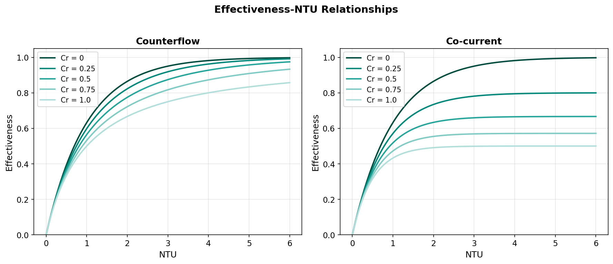

Effectiveness-NTU Method¶
Overview¶
The effectiveness-NTU (e-NTU) method provides a direct relationship between the heat exchanger thermal size (expressed as NTU), the stream capacity ratio, and the thermal effectiveness. Unlike the LMTD method, the e-NTU approach does not require knowledge of outlet temperatures to begin the calculation, making it the natural choice for the design mode of this unit operation, where the geometry (and hence UA) is known and the outlet temperatures are sought (Kays & London, 1984).
The e-NTU method is applied after the overall heat transfer coefficient \(U\) has been determined from the Martin (1996) correlation, yielding the effectiveness \(\varepsilon\) from which the heat duty and outlet temperatures are computed directly.
Definitions¶
Number of Transfer Units (NTU)¶
The NTU is a dimensionless measure of the heat exchanger thermal size relative to the minimum heat capacity rate:
where:
- \(UA\) — overall thermal conductance (W/K)
- \(C_{\min} = \min(C_h, C_c)\) — minimum heat capacity rate
- \(C_h = \dot{m}_h \cdot c_{p,h}\) — hot stream heat capacity rate (W/K)
- \(C_c = \dot{m}_c \cdot c_{p,c}\) — cold stream heat capacity rate (W/K)
Higher NTU values indicate a larger or more effective exchanger relative to the flow rates.
Heat Capacity Rate Ratio (\(C_r\))¶
The capacity ratio characterises the thermal balance between the two streams:
| \(C_r\) Value | Physical Meaning |
|---|---|
| \(C_r = 0\) | One stream undergoes phase change (infinite \(C_{\max}\)); e.g., condensation or evaporation |
| \(C_r = 1\) | Balanced exchanger — both streams have equal heat capacity rates |
| \(0 < C_r < 1\) | Unbalanced exchanger — the stream with \(C_{\min}\) experiences the larger temperature change |
Effectiveness (\(\varepsilon\))¶
The effectiveness is the ratio of actual heat transfer to the thermodynamically maximum possible heat transfer:
The maximum heat transfer \(Q_{\max}\) would occur in an infinitely long counterflow exchanger where the stream with \(C_{\min}\) undergoes the full temperature span \((T_{h,\text{in}} - T_{c,\text{in}})\).
Analytical Formulas¶
Counterflow¶
For a counterflow heat exchanger, the effectiveness is given by (Kays & London, 1984; Incropera et al., 2007):
General case (\(C_r < 1\)):
Balanced case (\(C_r = 1\)):
Derivation of the \(C_r = 1\) Limit
The balanced case is obtained by applying L'Hopital's rule to the general expression as \(C_r \to 1\). Both numerator and denominator approach 0, and the limiting form yields the simple rational expression above.
Phase-change limit (\(C_r = 0\)):
This is the same for all flow arrangements when one stream has effectively infinite heat capacity rate.
Co-current (Parallel Flow)¶
For co-current flow (Kays & London, 1984):
General case (\(C_r \le 1\)):
Balanced case (\(C_r = 1\)):
Maximum Effectiveness
For co-current flow, the maximum achievable effectiveness as \(\text{NTU} \to \infty\) is \(\varepsilon_{\max} = 1/(1 + C_r)\). For the balanced case (\(C_r = 1\)), this gives \(\varepsilon_{\max} = 0.5\), meaning at most half the maximum possible heat can be transferred. In contrast, counterflow can theoretically reach \(\varepsilon = 1.0\) as \(\text{NTU} \to \infty\).
Summary of e-NTU Relations¶
| Flow Arrangement | \(\varepsilon\) Formula | Valid Range |
|---|---|---|
| Counterflow, \(C_r < 1\) | \(\dfrac{1 - \exp[-\text{NTU}(1-C_r)]}{1 - C_r \exp[-\text{NTU}(1-C_r)]}\) | \(0 \le \varepsilon \le 1\) |
| Counterflow, \(C_r = 1\) | \(\dfrac{\text{NTU}}{1 + \text{NTU}}\) | \(0 \le \varepsilon \le 1\) |
| Co-current, \(C_r \le 1\) | \(\dfrac{1 - \exp[-\text{NTU}(1+C_r)]}{1 + C_r}\) | \(0 \le \varepsilon \le \dfrac{1}{1+C_r}\) |

Outlet Temperature Calculation¶
Once the effectiveness \(\varepsilon\) is determined, the actual heat duty and outlet temperatures follow directly.
Heat Duty¶
Hot Stream Outlet Temperature¶
Cold Stream Outlet Temperature¶
Direct Solution
The e-NTU method provides outlet temperatures without iteration on the temperature itself. In this implementation, iteration is still required for the property evaluation loop (fluid properties depend on the average temperature, which depends on the outlet temperature), but the e-NTU step within each iteration is a direct, non-iterative calculation.
Application to PHE Design Mode¶
In the design mode of this unit operation, the e-NTU method is embedded within the iterative solver as follows:
- Compute \(U\) from the Martin (1996) correlation using properties at the current average temperature estimate
- Compute \(UA\) = \(U \times A_{\text{total}}\)
- Compute NTU = \(UA / C_{\min}\) and \(C_r = C_{\min}/C_{\max}\)
- Evaluate \(\varepsilon\) from the appropriate analytical formula (counterflow or co-current)
- Compute \(Q\), \(T_{h,\text{out}}\), and \(T_{c,\text{out}}\) from the effectiveness
- Update average temperatures and return to step 1 until convergence
This procedure is described in detail in Numerical Methods.
Limitations¶
The e-NTU relations presented above are subject to the following constraints:
Applicability
- Constant \(U\) assumption — The formulas assume a spatially uniform overall heat transfer coefficient along the exchanger length. Temperature-dependent property variation introduces spatial variation in \(U\); this is handled approximately by evaluating properties at the mean bulk temperature.
- Constant \(c_p\) assumption — The heat capacity rates \(C_h\) and \(C_c\) are assumed constant. For fluids with strongly temperature-dependent \(c_p\) (e.g., near the critical point), the accuracy of the e-NTU method decreases.
- Single-phase only — The standard e-NTU relations do not apply to two-phase flows where latent heat effects make the effective \(c_p\) undefined or discontinuous.
- Single-pass configuration — The counterflow and co-current formulas apply to single-pass arrangements. Multi-pass PHE configurations require correction factors not implemented in this unit operation.